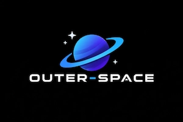

Jhon Smith
Astronaut

we are start-up company that wants to explore something that has never been sean, watch and suport our jurney
Astronaut
Astronaut
Main resercher
C.E.O
Black holes are regions in space where gravity is so strong that nothing, not even light, can escape from them.
This is the boundary of a black hole. Once anything crosses this "point of no return," escape is physically impossible.
At the very center of a black hole, matter is crushed into an infinitely dense, infinitely small point.
are massive structures of interstellar gas and dust located in the heart of the Eagle Nebula (also known as Messier 16). They represent one of the most famous and visually stunning cosmic landscapes ever photographed in human history.
They are located approximately 6,500 light-years away from us in the constellation Serpens.
While they look like solid mountains, they are actually columns of cold hydrogen gas and dust. The largest pillar on the left stretches roughly 4 to 5 light-years long—meaning a beam of light would take up to five years just to travel from its base to its peak!